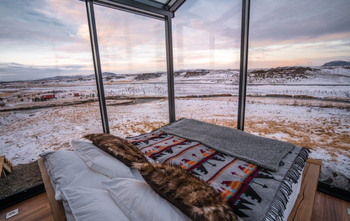

Find peace in the Forest
Come and stay in out hut hotel near
Mariager Fjord in Denmark
The Cabins
Løvtag’s three exclusive and comfortable cabins, Et, Ro and Ly,
are designed by architect Sigurd Larsen. They all have an open
space with a double bed, a double sofa bed, kitchen, separate
toilet and an outdoor shower. On the roof, surrounded by
treetops, there is a terrace, which is about nine meters above
ground. The cottages are built around tall, old trees that go
through the entire cottage from floor to ceiling.
Read More
